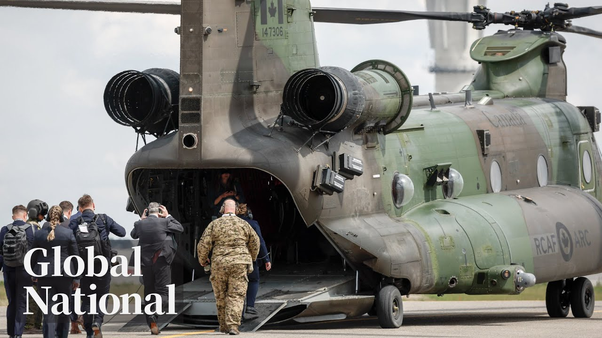

【Global News 加拿大如何支付北约新国防开支目标？｜加拿大时间2025-06-25】
Summary: Canada commits to doubling defense spending amid NATO's 5% GDP target, faces challenges in funding sources, while global tensions and domestic priorities complicate the path.
摘要： 加拿大承诺在北约5% GDP目标下翻倍国防开支，面临资金来源挑战，同时全球紧张局势和国内优先事项使道路复杂化。

⏱️ Estimated Reading Time: 16 min
📚 六级生词 📚 雅思生词 📚 托福生词 📚 专八生词 📚 SAT生词 📚 考研生词 📚 GRE生词 📚 高考生词
And tariff uncertainty hammers businesses and households taking aim at auto sector jobs.
关税不确定性冲击企业和家庭，尤其影响汽车行业就业。
There is some risk that we will see some of these job losses filtered through to other parts of the economy if people in one sector have lost their jobs.
若某一行业失业，这些岗位流失可能蔓延至其他经济领域。
They're not necessarily eating out, spending on clothing as they usually would have.
他们可能减少外出就餐和服装消费等日常开支。
Ontario and Quebec economies tied to trade and manufacturing to bear the brunt of it.
依赖贸易和制造业的安大略与魁北克经济首当其冲。
Energy producers Newfoundland and Labrador, Alberta and Saskatchewan expected to lead growth.
能源生产省份纽芬兰、阿尔伯塔和萨斯喀彻温预计引领增长。
An uneven recession that mom and pop shops say they're already feeling.
小企业主表示已感受到不均衡的衰退影响。
A survey of 150 small businesses shows three quarters have already cut spending.
一项针对150家小企业的调查显示，四分之三已削减开支。
40% delayed hiring or put expansion plans on pause.
40%推迟招聘或暂停扩张计划。
80% of the businesses we surveyed have already, you know, braced for impact, done something to get ahead of this.
80%受访企业已采取预防措施应对冲击。
Smaller businesses have smaller cash cushions and may be the proverbial canary in the coal mine for predicting a recession.
小企业资金缓冲更少，可能是预示衰退的"煤矿中的金丝雀"。
They're managing cash flows month to month or even week to week.
它们仅能维持月度甚至周度现金流。
So if revenues start to decline, it doesn't take very long before they start to struggle with their expenses.
一旦收入下滑，很快将难以支付开支。
Households have pulled back on spending too.
家庭也缩减了支出。
What we're seeing right now is weakness in food service, weakness in highly discretionary spend driven industries like hotels, spas, dance studios, country clubs.
当前餐饮业疲软，酒店、水疗等非必需消费行业表现低迷。
Economic weakness that Deote and others see as the impetus for the central bank to lower interest rates this summer or fall.
Deote等认为经济疲软将促使央行在今夏或秋季降息。
We still think that there is room for the Bank of Canada to lower the policy rate.
我们认为加拿大央行仍有降息空间。
Not a lot. We have another 50 basis points or half a percentage point.
幅度不大，约50个基点即0.5%。
It's not all doom and gloom.
并非全是悲观前景。
Deoid identifies federal spending and investment, the byanadian movement and an increase in domestic travel, so-called stations, all helping to cushion the tariff blow.
Deoid指出联邦支出、国内旅行增长等因素缓解了关税冲击。
Donna. Okay. And Gabiola in Toronto. Thank you.
多娜。好的。多伦多的加比奥拉，谢谢。
A tentative agreement has been reached between DHL and its employees.
DHL与员工达成初步协议。
2100 workers at the logistics company were locked out two and a half weeks ago.
两周半前该物流公司2100名员工被拒之门外。
Unifor says its members have now reached a deal, though no details will be released until after a ratification vote.
Unifor称已达成协议，但批准投票前不会公布细节。
One man's haunting memories of the rock slide in B National Park.
一名男子对B国家公园岩石滑坡的惨痛记忆。
Coming up, how the mountain rained down on him and how his friend saved his life.
接下来讲述山体如何崩塌，以及朋友如何救了他的命。
That was a shocker.
令人震惊。
A lightning strike on a school in London, Ontario yesterday meant an elementary school graduation ceremony had to be put on hold.
昨日安大略伦敦市学校遭雷击，小学毕业典礼被迫暂停。
The fire department shared video of the lightning hitting the chimney of London South Collegiate.
消防部门分享了雷电击中伦敦南方学院烟囱的视频。
It caused structural damage, but no one was injured.
造成结构损坏，但无人受伤。
The grade 8 students, their families, and teachers had to leave the building.
八年级学生、家属和教师撤离了建筑。
though they continued the ceremony at a nearby school.
后在附近学校继续举行典礼。
A man who survived that terrible rock slide in Ba National Park is describing the harrowing moment it happened.
班夫国家公园岩石滑坡幸存者描述灾难发生的恐怖时刻。
He was badly injured and the friend he was hiking with was one of two people who were killed.
他重伤，同行好友是两名遇难者之一。
As Heather Urick's West reports, he says he owes his life to that friend.
Heather Urick报道称，他表示生命归功于那位朋友。
It was supposed to be the trip of a lifetime for two friends exploring the country they now call home.
这本是两位朋友探索第二故乡的毕生之旅。
And this was the one of one of the things on our bucket list to come to Calgary and enjoy the banks part.
来卡尔加里游览班夫是我们的心愿之一。
But what began as a sunny hike along beautiful mountain paths turned suddenly tragic with the crack of a thundering sound.
但晴朗的山间徒步因一声巨响骤成悲剧。
It just looks like the mountain is like falling apart.
整座山仿佛在崩塌。
I don't know. We saw I saw a bunch of rocks, bunch of big rocks like uh slamming the ground and uh rolling towards us and I froze.
我看到无数巨石砸向地面，朝我们滚来，我僵住了。
It was then Khed Algamal heard his friend's final words as he called out to run.
那时Khed Algamal听到朋友最后的呼喊——快跑。
He actually saved me in that sense.
他这样救了我。
He made me gain back my consciousness and I started uh running.
他让我恢复意识，我开始奔跑。
But they could not both escape in time.
但两人未能及时逃脱。
I just kept getting hit by a bunch of rocks and uh I yeah at that point I was blacking out and then gaining back consciousness.
我被无数岩石击中，不断昏迷又苏醒。
When the slide finally stopped with a broken pelvis and shoulder, Khaled somehow managed to trek back down.
滑坡停止时，骨盆和肩膀骨折的Khaled仍挣扎下山。
My back was in so much pain at that point.
当时背部剧痛难忍。
I was barely walking and uh once I reached the ground the I just kept screaming for help help and uh and telling them my friend my friend is up there.
几乎无法行走，到达平地后不断呼救并告知朋友仍在山上。
Algamal was transported by air ambulance to Calgary that day.
当日Algamal被空运至卡尔加里。
But it would be the next morning before the body of his friend and housemate, 33-year-old Hamza Benhilal, would be found.
但室友Hamza Benhilal的遗体次日清晨才被发现。
His death is is very shocking.
他的离世令人震惊。
I didn't expect that at all. grief and sorrow.
完全未预料到，唯有悲痛。
Yeah, for days we didn't we don't sleep.
多日无法入眠。
An international student studying in Suri, BC.
Hamza是不列颠哥伦比亚省素里市的国际学生。
Hamza was from Morocco.
来自摩洛哥。
His brother making the long journey to Canada now to help bring him back home.
其兄弟正赴加准备带他回家。
He was uh just perfect, always hand in his hand.
他完美无瑕，永远乐于助人。
Forever remembered by his friend as a hero who died in a beautiful place he had come to love.
朋友永远铭记这位英雄，在他热爱的美丽之地逝去。
Heather, your ex West, Global News, Calgary.
Heather Urick，环球新闻，卡尔加里。
Ahead, the main squeeze to win Canadian visitors back to the US.
接下来：美国如何争取加拿大游客回流。
Ignition and lift.
点火升空。
For the first time, India, Poland, and Hungary have launched astronauts to the International Space Station.
印度、波兰和匈牙利首次联合派遣宇航员前往国际空间站。
The crew led by a US commander lifted off from Florida for a two-week mission chartered by the privately funded Axiom Space.
美国指挥官率领的团队从佛罗里达升空，执行私营公司Axiom资助的为期两周任务。
The astronauts will conduct research on behalf of 31 nations.
宇航员将代表31国进行研究。
For Canadians who stick closer to home, some tough decisions are being made about where to travel.
选择国内游的加拿大人面临艰难旅行决策。
A lot of people have crossed America off the list.
许多人将美国排除在清单外。
As Heidi Petraic reports, the governor of the state of Maine is on a mission to the Maritimes to woo back her neighbors.
Heidi Petraic报道，缅因州长赴滨海地区争取加拿大游客。
are available.
可提供。
Janet Mills came north with a big ask for Canadians.
Janet Mills北上向加拿大人发出重要请求。
Don't be a stranger.
别做陌生人。
Because when you don't come to Maine, what you're damaging is not the folks in Washington DC.
因为你们不来伤害的不是华盛顿政客。
What you're harming and putting at risk are the small mom and pop motel, BMBBS.
而是小本经营的汽车旅馆和民宿。
New figures show Maine's tourism industry is being hammered.
新数据显示缅因旅游业受重创。
In May of 2024, there were more than 261,000 visits to Maine.
2024年5月缅因游客超26.1万。
This year it's down by about 85,000 as nearly a third of those visitors stayed away.
今年减少约8.5万，近三分之一游客未至。
We go back eons and th that relationship will not uh will be unchanged by some of the rhetoric in Washington.
我们历史渊源深厚，不会被华盛顿言论改变。
The governor is in a tough spot between Canadians upset with Trump's rhetoric and policies and a president she's already bit at odds with.
州长夹在对特朗普言论不满的加拿大人和与之不和的总统间。
Maine is a small state.
缅因是小州。
Uh I don't believe it voted for Mr. Trump in the last election.
上次选举未支持特朗普。
Um and so there's a number of of reasons that he's probably reluctant to to listen to them.
因此总统可能不愿听取意见。
A tense exchange between Mills and the president in February likely another.
二月Mills与总统的紧张交锋是另一原因。
You're not getting any any federal funding.
你们拿不到联邦资金。
See you in court.
法庭见。
And so the Democrat is trying to undo the damage of Trump's tariffs and 51st state talk starting earlier this week in New Brunswick where the premier acknowledged the important trade relationship but reiterated.
这位民主党人试图挽回特朗普关税和"第51州"言论的损害，本周先访新不伦瑞克，省长承认重要贸易关系但重申。
The big picture is that tourism is is is not something that that that we can collaborate on right now.
目前旅游业难以合作。
It's going to go great.
会顺利的。
Nova Scotia's premier also standing firm before his meeting with Mills Wednesday.
新斯科舍省长周三会前也立场坚定。
We need to see a trade deal.
我们需要贸易协议。
We need to see a change u in in in the in the tone of the message um at at the highest level.
需要最高层改变论调。
It's for both of our sakes.
这对双方都有利。
Canadians may still need some convincing.
加拿大人或仍需说服。
Heidi Patrick, Global News, Halifax.
Heidi Patrick，环球新闻，哈利法克斯。
A stunning upset in the race to become New York City's next mayor.
纽约市长竞选爆冷。
33-year-old New York State legislature, Zoran Mamdani, who promises free buses, free universal child care, and a rent freeze, won the Democratic primary in the mayoral race.
33岁州议员Zoran Mamdani承诺免费公交、托儿和租金冻结，赢得民主党初选。
He defeated former New York State Governor Andrew Cuomo, who was trying to make a comeback after resigning in 2021 over a sexual harassment scandal.
他击败因性骚扰丑闻辞职的前州长Andrew Cuomo。
If elected this November, Mdani would be the city's first Muslim and first Asian-American mayor.
若11月当选，他将成为纽约首位穆斯林和亚裔市长。
He's expected to be the main challenger to current New York City Mayor Eric Adams.
预计他将挑战现任市长Eric Adams。
Next, a divided diaspora.
接下来：分裂的海外群体。
How Iranian Canadians are coping with a fragile ceasefire and an uncertain future in their home country.
伊朗裔加拿大人如何应对脆弱停火和故国不确定性。
The conflict between Iran and Israel has dredged up a lot of feelings among Iranian Canadians who fled the regime years ago, and it's raising deeper questions about identity and belonging.
以伊冲突唤起多年前逃离政权者的复杂情绪，引发对身份认同的深层思考。
In one of Canada's largest Iranian communities, some say they're struggling not just with the headlines, but with each other.
在加拿大最大伊朗社区之一，人们不仅因新闻也因彼此分歧挣扎。
Ethu Garcher reports on a diaspora divided.
Ethu Garcher报道分裂的海外群体。
Metro Vancouver's Northshore is home to one of Canada's largest Iranian communities.
温哥华北岸是加拿大最大伊朗社区之一。
Many are feeling the impact of the latest violence in personal and complex ways.
最新暴力事件以复杂方式影响众人。
We are very much polarized.
我们严重分化。
You know, people are going through a lot of emotions.
人们经历着复杂情绪。
This psychotherapist says many of her Persian and Iranian clients are feeling a combination of fear for loved ones, memories of forced migration, and renewed questions of identity.
心理治疗师表示，许多波斯和伊朗客户交织着对亲人的担忧、被迫迁徙的记忆和身份认同问题。
The fear and anxiety over what is next is exhausting people.
对未来的恐惧和焦虑令人精疲力竭。
And Pon Perebball herself is among those who as a refugee left Iran where she was born and raised.
Pon Perebball本人也是幼时逃离伊朗的难民。
7 months pregnant, I left Iran with the fear of what's going to happen.
怀着七个月身孕离开时，我充满对未来的恐惧。
the same fear that we have today 37 years later.
37年后的今天恐惧依旧。
What's going to happen? We don't know.
会发生什么？我们无从知晓。
Perebball says the diaspora is also divided.
Perebball称海外群体也存分歧。
Many Iranians are happy that this regime is being targeted.
许多伊朗人乐见政权受打击。
However, we are also concerned about the country being bombarded and this is causing a lot of problem.
但也担忧国家遭轰炸，这引发诸多问题。
This is causing a lot of isolation.
导致严重孤立。
A lot of people they're hopeful that this would be a turning point and it can weaken the regime in a way that would bring about positive change.
许多人希望这是转折点，能削弱政权带来积极变革。
I don't know what to think.
我不知如何思考。
Community activist Amir Bjekon says many are dealing with anxiety too.
社区活动家Amir Bjekon称许多人还面临焦虑。
the fact that uh we are a community that has to navigate through nuances uh and gray areas for the past four uh decades or so is something that takes a toll on people.
四十年来我们不得不在微妙和灰色地带中前行，这消耗着人们。
Pereagal says finding connection in community groups is critical as is staying hopeful for peace while fostering empathy especially in the younger generation.
Pereagal认为建立社区联结、保持和平希望及培养同理心（尤其对年轻一代）至关重要。
Nitu gara global news west Vancouver BC that is global national for this Wednesday I'm Donna Fzen tonight your Canada showcases Chilowak BC Matlock Manitoba and Selwin Ontario please keep them coming send your pictures of Canadian pride to global national at globalnews.ca and thanks for watching hope to see you here again tomorrow. Bye-bye.
Nitu Gara，环球新闻，西温哥华。这里是周三的《全球国家》，我是Donna Fzen。今晚《你的加拿大》展示奇利瓦克、马尼托巴马特洛克和安大略塞尔温。请继续发送加拿大骄傲照片至globalnews.ca。感谢收看，明天见。再见。